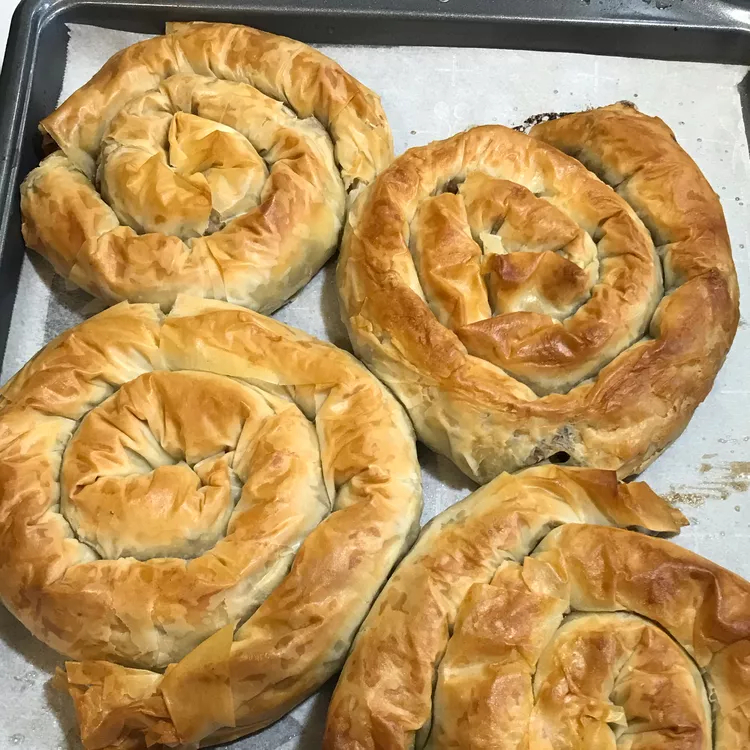

Burek

This burek recipe is from Albania. My mom made this for me while I was growing up — my whole family always looked forward to it. Serve with Balkan-style yogurt for authenticity.
Ingredients
- 1 pound lean ground beef
- 1 tablespoon ground allspice
- tablespoon paprika
- salt and freshly ground pepper to taste
- 1 medium potato, finely chopped
- 1 medium onion, chopped
- 16 sheets phyllo dough, thawed
- ¼ cup melted butter
Steps
- Preheat the oven to 400 degrees F (200 degrees C).
- Cook and stir ground beef in a large nonstick skillet over medium heat until browned and crumbly, 5 to 7 minutes; drain fat. Stir in allspice, paprika, salt, and pepper. Transfer mixture to a large bowl and stir in potato and onion.
- Stack two sheets phyllo dough on a work surface. Spoon 1/8 of the beef mixture down one long edge of the stack, then roll phyllo around filling into a tube. Coil the tube into a snail shape and place onto an ungreased baking sheet. Repeat to make seven more burek, placing finished coils up against one another to keep them from unrolling. Brush melted butter over the tops.
- Bake in the preheated oven until golden brown, 20 to 30 minutes.
Previous
Home
Next